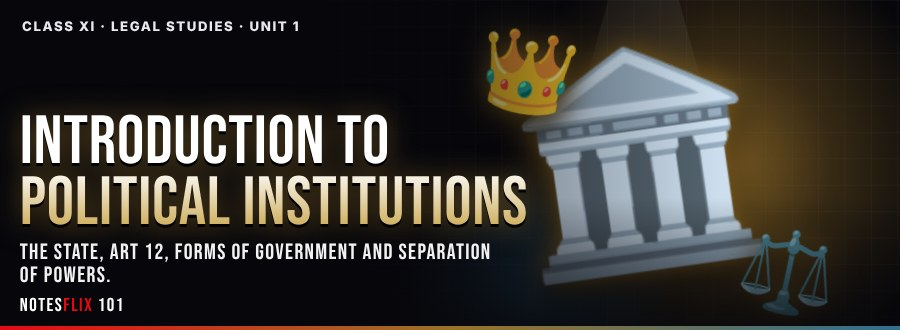
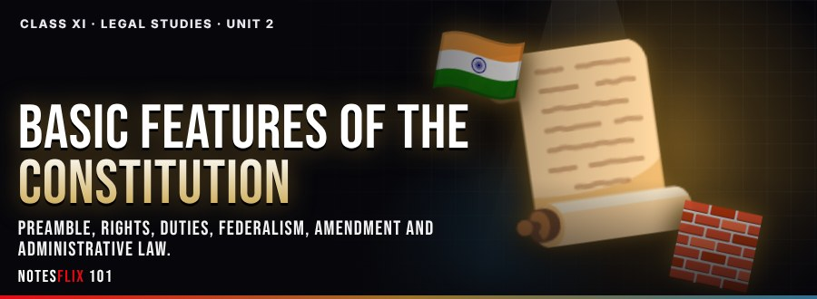
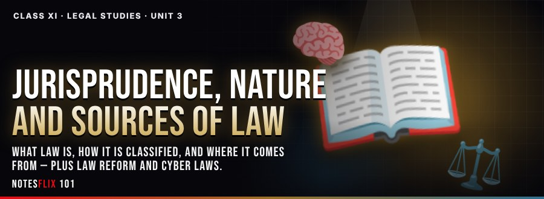
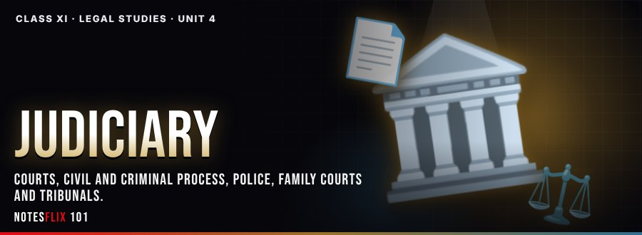
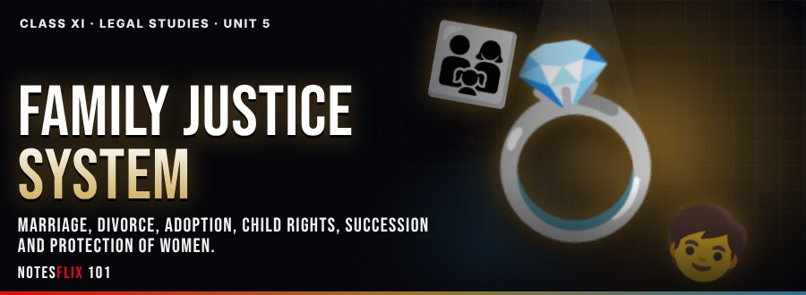

Class 11 Legal Studies Notes
Interactive CBSE Class 11 Legal Studies notes from Notesflix 101. They follow the CBSE Legal Studies syllabus (2026-27) and the CBSE textbook Legal Studies for Class 11, with current Indian law. Each chapter is broken into short parts with easy explanations, picture stories, flash cards, quizzes and board-style exam questions with model answers. 9 of 9 parts are free to read with no password. The other parts open with a password from Notesflix 101.
Chapters

Unit 1: Introduction to Political Institutions
The State, Art 12, forms of government and separation of powers.
- State, Government, Separation of PowersFREE — Story, animations, 3D board, simulations and board-exam practice on Concept of State, State under Art 12, Forms and organs of government. (25 min)

Unit 2: Basic Features of the Constitution
Preamble, rights, duties, federalism, amendment and administrative law.
- Salient Features of the ConstitutionFREE — Story, animations, 3D board, simulations and board-exam practice on Preamble, Rights, DPSP and duties, Federalism, Schedules, Emergency. (25 min)
- Administrative Law (Part 2)FREE — Story, animations, 3D board, simulations and board-exam practice on Rule of law, Droit administratif and delegated legislation, Natural justice. (25 min)

Unit 3: Jurisprudence, Nature and Sources of Law
What law is, how it is classified, and where it comes from — plus law reform and cyber laws.
- Nature, Classification and SourcesFREE — Story, animations, 3D board, simulations and board-exam practice on Meaning and schools of law, Classification of law, Custom. (25 min)
- Law Reform and Cyber Laws (Part 2)FREE — Story, animations, 3D board, simulations and board-exam practice on Law reform and Law Commission, Judicial activism and PIL, IT Act 2000. (25 min)

Unit 4: Judiciary
Courts, civil and criminal process, police, family courts and tribunals.
- Courts and Civil ProcessFREE — Story, animations, 3D board, simulations and board-exam practice on Structure of courts, Jurisdiction, Stages of a civil suit. (25 min)
- Criminal Process, Police, Family Courts, Tribunals (Part 2)FREE — Story, animations, 3D board, simulations and board-exam practice on FIR, arrest, investigation, Trial and double jeopardy, Police and reforms. (25 min)

Unit 5: Family Justice System
Marriage, divorce, adoption, child rights, succession and protection of women.
- Marriage, Divorce, Adoption, Child RightsFREE — Story, animations, 3D board, simulations and board-exam practice on Marriage, Divorce, Adoption. (25 min)
- Succession and Protection of Women (Part 2)FREE — Story, animations, 3D board, simulations and board-exam practice on Hindu succession, Muslim and Christian succession; wills, Domestic violence and dowry. (25 min)
Frequently asked questions
Are the Class 11 Legal Studies notes free?
9 of 9 parts are free to read with no password. The other parts open with a password from Notesflix 101.
Which syllabus do these Class 11 Legal Studies notes follow?
They follow the CBSE Legal Studies syllabus (2026-27) and the CBSE textbook Legal Studies for Class 11, with current Indian law. Every chapter is split into short interactive parts with simple explanations, flash cards, quizzes and board-style exam questions with model answers.
How many chapters are covered?
5 chapters: Introduction to Political Institutions; Basic Features of the Constitution; Jurisprudence, Nature and Sources of Law; Judiciary; Family Justice System.
How do I get the password for locked notes?
Email support@notesflix101.com with your name, class, school and the Gmail ID you sign in with. The same password opens every locked Legal Studies note.